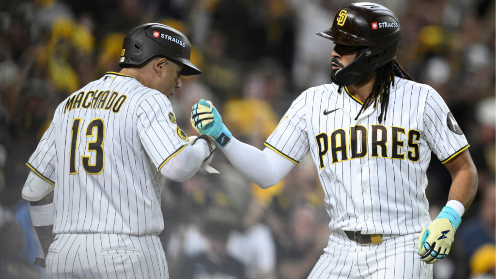
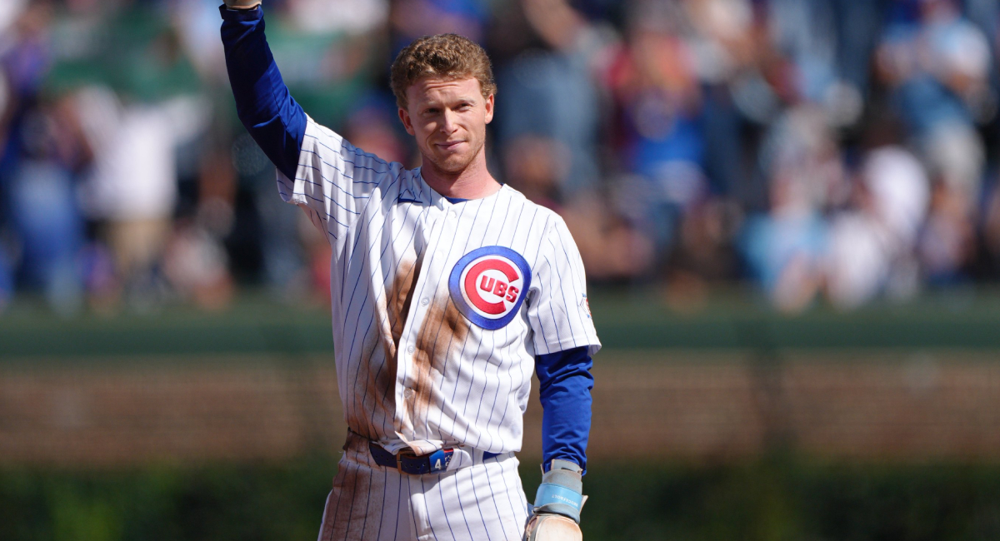
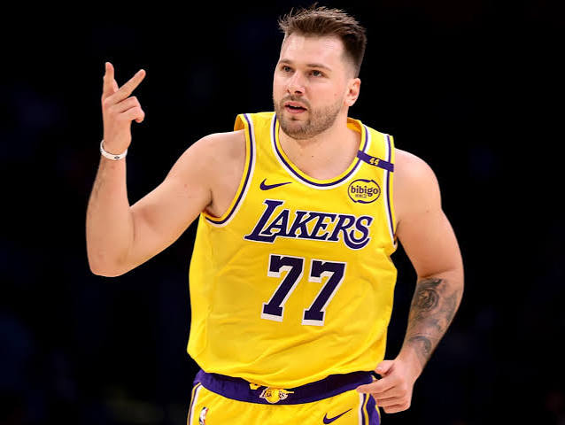

Bienvenido
Hola, soy Renfild. Desde toda la vida me gustan la MLB y el baloncesto. En esta página te cuento cuáles son mis equipos favoritos, qué jugadores admiro y por qué.
Usa los botones de arriba o estos para moverte por la página.
MLB
Mi equipo: San Diego Padres
Mi equipo favorito es San Diego por la armonía que tienen Tatis y Machado. Se nota que juegan en sintonía y eso hace al equipo especial.
Fernando Tatis Jr.
- Nombre
- Fernando Gabriel Tatis Jr.
- Apodo
- El Niño
- Nacimiento
- 2 de enero de 1999, San Pedro de Macorís, República Dominicana
- Debut
- 28 de marzo de 2019
- Familia
- Hijo de Fernando Tatis, también pelotero de Grandes Ligas
Manny Machado
- Nombre
- Manuel Arturo Machado
- Apodo
- El Ministro
- Nacimiento
- 6 de julio de 1992, Miami, Florida
- Draft
- 2010, Baltimore Orioles, primera ronda, selección 3
- Preparatoria
- Brito Miami Private School, Miami
- Debut
- 9 de agosto de 2012
- Familia
- Cuñado de Yonder Alonso, también pelotero de Grandes Ligas

El pelotero que admiro: Pete Crow-Armstrong
Admiro a Pete Crow-Armstrong por su juego agresivo. Es un pelotero de cinco herramientas: batea para average, tiene poder, corre, defiende y tiene buen brazo.
- Nombre
- Pete Henry Crow-Armstrong
- Apodo
- PCA
- Nacimiento
- 25 de marzo de 2002, Sherman Oaks, California
- Draft
- 2020, New York Mets, primera ronda, selección 19
- Preparatoria
- Harvard-Westlake, Los Ángeles
- Debut
- 11 de septiembre de 2023

Estadísticas de por vida en Grandes Ligas
| Tatis Jr. | Machado | Crow-Armstrong | |
|---|---|---|---|
| Juegos | 830 | 2,052 | 455 |
| Hits | 901 | 2,197 | 409 |
| Jonrones | 177 | 399 | 86 |
| Carreras impulsadas | 476 | 1,235 | 250 |
| Bases robadas | 162 | 118 | 105 |
| Promedio de bateo | .279 | .274 | .255 |
| Porcentaje de embasado | .355 | .335 | .320 |
| OPS | .860 | .815 | .809 |
Datos: MLB.com y Baseball-Reference. Machado tiene más juegos porque debutó en 2012, así que los totales no se comparan en igualdad de temporadas.
El momento que más recuerdo
El momento que más recuerdo es la serie divisional de 2022 entre San Diego y los Dodgers. Los Dodgers venían de ganar 111 juegos en la temporada regular y casi todos los veían como favoritos. Aun así, San Diego ganó la serie 3-1 y avanzó a la Serie de Campeonato de la Liga Nacional por primera vez desde 1998.
Ver más en MLB.comBaloncesto
Mi equipo: Los Angeles Lakers
Los Lakers son un equipo lleno de historia. Ayudaron a revolucionar el baloncesto a nivel mundial por ser un equipo ganador.

Mi jugador favorito: Luka Dončić
Luka es mi jugador favorito actual. Lo admiro porque es una máquina anotadora y además puede subir el nivel de jugadores de bajo rendimiento.
- Nombre
- Luka Dončić
- Apodo
- Luka Magic (también "Wonder Boy")
- Nacimiento
- 28 de febrero de 1999, Liubliana, Eslovenia
- Antes de la NBA
- Real Madrid, con el que ganó la EuroLeague en 2018
- Draft
- 2018, Atlanta Hawks, primera ronda, selección 3 (sus derechos pasaron a los Dallas Mavericks)
- Debut
- 17 de octubre de 2018
- Familia
- Hijo de Saša Dončić, jugador y entrenador de baloncesto

Estadísticas de por vida en la NBA
| Estadística | Luka Dončić |
|---|---|
| Juegos | 514 |
| Puntos por juego | 29.2 |
| Rebotes por juego | 8.5 |
| Asistencias por juego | 8.2 |
| Tiros de campo | 46.9 % |
| Triples | 35.2 % |
| Tiros libres | 75.5 % |
Datos de temporada regular hasta la temporada 2025-26. Fuentes: StatMuse y CBS Sports.
Ver más de los LakersBéisbol vs. baloncesto
| Béisbol (MLB) | Baloncesto | |
|---|---|---|
| Jugadores en el campo por equipo | 9 | 5 |
| Equipo que sigo | San Diego Padres | Los Angeles Lakers |
| Jugador que admiro | Pete Crow-Armstrong | Luka Dončić |
| Ritmo del juego | Más pausado: cada lanzamiento cuenta y un solo turno puede cambiar el juego | Muy rápido: se anota seguido y la ventaja puede cambiar en pocos minutos |
Cuál prefiero
Me quedo con el béisbol, sobre todo por los Padres. Son un equipo muy emocionante de ver, y esa emoción es lo que más disfruto cuando miro un juego. Aun así, el baloncesto con los Lakers y Luka Dončić también me encanta.